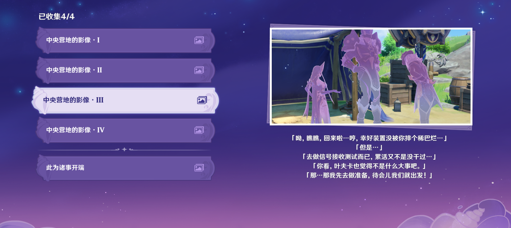

「自离开家以来，一路造访稻妻各地，颇长见识。旅途虽贫苦，但以天地为屋宇，万物为诗友，也是很有滋味。」
「音乐能证明一个人的心。要是没有勇气，就无法弹奏出动听的曲子，而要是缺少了诚意，人就无法与他人取得共鸣。」
「人类对星空的好奇源自本能…要是能在这里读懂一切秘密就好了」
「漆黑之扈从奥兹，以你眼中所见的真实为本皇女铺路吧！我所未见之鄙陋，皆为虚幻。」
「小姐的意思是…看不见的缺损便不存在？」

「阿加霞，我们休息会儿吧唉，真不知道这些岛上，能不能找到什么可以果腹的东西啊…」

「好了，扎哈尔，这个岛上的信号测试已经做完了…希望机器能够顺利启动吧…」
「好、好，我们快点到下一座岛上去吧…快些完成任务，我想早点回到营地休息…」

「扎哈尔，别勉强了，你看，前面那个山洞…」
「我们先去那边休息一下吧…」
「唔…阿加霞，我没关系的…只是肚子有点不舒服而已…
「好了，我找来四个苹果…等好点了你就吃了吧…」
「可是任务…」
「没关系，扎哈尔，任务就由我来…你就去上面好好休息吧。」
「怎么回事…信号测试的标点附近为什么会有这么多丘丘人…」

「你可是我们之中获得荣誉最多的人，就不能对任务上点心吗…」
「…你什么时候能意识到，荣誉，雅科夫，荣誉才是最重要的！」
「叶夫卡，连累大家我很抱歉…但是我对你说的荣誉，可是半点都不在乎」

「可恶，他到底把那个徽记扔哪去了…」
「再这么找下去也不是办法，得先到下个岛去，不能让雅科夫一个人…」

「不对，雅科夫怎么不见了…那是什么东西…」
「到底怎么回事，雅科夫穿过去之后，周围的光就依次熄灭了…」
「那个顺序是…白色、绿色…红色、蓝色？」

「扎哈尔，怎么了，从刚才起就捂着肚子，你是不是有点不舒服…」
「没有的事，阿加霞，只是、只是昨晚有点受凉了，休息会儿就好了，不碍事的！」


「可、可恶的丘丘人！」
「又在说什么荣誉高于一切的话！荣誉荣誉荣誉，你脑子里就没点别的东西吗…你不就是想要这个吗，你自己捡去吧！」
「不，不要扔那个，那可是你得过军功的证明啊…」

「这是一个什么东西…那一侧的场景…」
「那里面…有什么？」

「雅科夫，长官说了你些什么，你这么垂头丧气的。」
「因为海浪颠簸，搬运仪器的时候摔了一跤，幸好我手快，装置没事…」
「但是长官还是训话说，要让我们小队去各个岛上做装置的信号接收测试，那可是最辛苦的任务…」
「没关系，不必这么伤心，咱们什么累活没干过啊。别伤心啦，先吃点东西吧！」
「阿加霞，佩尔西科夫大人让我们去做信号接收测试，是让我们四个一起去…叶夫卡要是听到这件事，又得生气不可…」
「雅科夫，不会的，这是上面大人的命令，叶夫卡肯定也不会责怪你的…」
「唉，你要是真这么害怕，我陪你去跟叶夫卡说。」
「呦，瞧瞧，回来啦…哼，幸好装置没被你摔个稀巴烂…」
「但是…」
「去做信号接收测试而已，累活又不是没干过…」
「你看，叶夫卡也觉得不是什么大事吧。」
「那…那我先去做准备，待会儿我们就出发！」
「信号测试器…两组…」
「唉，我还以为他被单独叫出去是要受什么严重的惩罚，结果只是布置了 比较麻烦的任务，真是松了口气。」
「他可害怕被你骂了，哈哈，看上去就像是害怕被『哥哥』骂的『弟弟』一样…你说，他是不是，其实怕的是我们对他失望…明明大家只是小队成员而已…但有的时候，感觉就跟『家人』一样啊…」
「你看，叶夫卡也觉得不是什么大事吧。」
「家人吗…」
「雅科夫，长官说了你些什么，你这么垂头丧气的。」
「因为海浪颠簸，搬运仪器的时候摔了一跤，幸好我手快，装置没事…」
「但是长官还是训话说，要让我们小队去各个岛上做装置的信号接收测试，那可是最辛苦的任务…」
「没关系，不必这么伤心，咱们什么累活没干过啊。别伤心啦，先吃点东西吧！」
「阿加霞，佩尔西科夫大人让我们去做信号接收测试，是让我们四个一起去…叶夫卡要是听到这件事，又得生气不可…」
「雅科夫，不会的，这是上面大人的命令，叶夫卡肯定也不会责怪你的…」
「唉，你要是真这么害怕，我陪你去跟叶夫卡说。」
「呦，瞧瞧，回来啦…哼，幸好装置没被你摔个稀巴烂…」
「但是…」
「去做信号接收测试而已，累活又不是没干过…」
「你看，叶夫卡也觉得不是什么大事吧。」
「那…那我先去做准备，待会儿我们就出发！」
「信号测试器…两组…」
「唉，我还以为他被单独叫出去是要受什么严重的惩罚，结果只是布置了 比较麻烦的任务，真是松了口气。」
「他可害怕被你骂了，哈哈，看上去就像是害怕被『哥哥』骂的『弟弟』一样…你说，他是不是，其实怕的是我们对他失望…明明大家只是小队成员而已…但有的时候，感觉就跟『家人』一样啊…」
「你看，叶夫卡也觉得不是什么大事吧。」
「家人吗…」